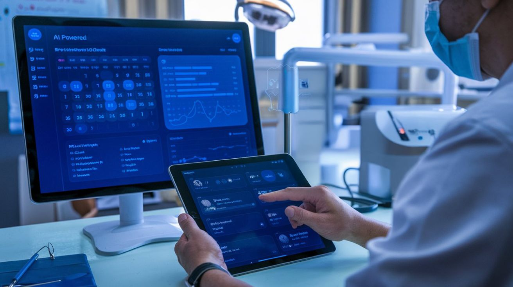

How AI-Powered, Cloud-Based Dental Software is Optimizing Your Practice
Running a dental practice comes with a lot of responsibilities—from managing appointments and patient care to handling finances and staff. It can often feel like there’s not enough time in the day to get everything done. But what if there was a way to make things easier? That’s where AI-powered, cloud-based dental software comes in.
This innovative technology helps manage all parts of your practice—from patient scheduling to finances and everything in between—all in one place. And the best part? It works in the cloud, so you can access everything anytime, anywhere.
Let’s look at how AI and cloud-based systems are making dental practices more efficient, organized, and ready for the future.
Effortless Scheduling with AI
Scheduling can be one of the most stressful tasks in a dental practice. With AI-powered software, the system can automatically suggest the best times for appointments based on your calendar, patient preferences, and even the likelihood of patients showing up. This helps reduce no-shows, saves time, and makes your daily schedule run smoother.
Imagine not having to worry about double-bookings or missed appointments—AI takes care of that for you, so you can focus on treating your patients.
Access Your Practice From Anywhere
One of the greatest advantages of cloud-based software is that you can access it from any device—whether you’re in the office, at home, or on the go. Need to check a patient’s file or update a treatment plan while traveling? No problem! The cloud keeps all your data in one place, and you can access it from anywhere with an internet connection.
This is especially helpful if you run a practice with multiple locations, as you can oversee everything from one dashboard, no matter where you are.
Simplified Billing and Financial Management
Managing billing and finances can be a headache for dental practices. With AI-powered software, billing becomes a lot easier. The system can automatically track insurance claims, send reminders for overdue payments, and keep everything organized. This not only reduces errors but also speeds up the payment process.
Your staff won’t have to spend hours chasing payments or correcting mistakes. Plus, you’ll have a clearer picture of your practice’s financial health at all times.
Boosting Team Productivity
Your dental team is the backbone of your practice, and AI-powered software helps keep everyone working together smoothly. The software allows your team to access shared calendars, communicate easily, and manage tasks efficiently. AI also helps organize the day’s schedule so that everyone knows what they need to do and when.
With less confusion and better coordination, your team will be more productive and less stressed. A well-organized practice means more time for patient care and less time spent on administrative tasks.
Keeping Patient Data Safe
In today’s world, keeping patient information secure is crucial. Cloud-based systems offer the best security to ensure that your patients’ data is always protected. With advanced encryption and regular backups, you don’t have to worry about losing patient records or facing a data breach.
Plus, these systems are designed to meet all the necessary regulations (like HIPAA), so you can rest easy knowing your practice is compliant.
Real-Time Data for Smarter Decisions
AI-powered software gives you real-time insights into how your practice is performing. Whether it’s patient satisfaction, financial data, or treatment success rates, you’ll have access to valuable information that helps you make smarter decisions.
With these insights, you can spot trends, see areas where your practice is excelling, and identify opportunities to improve. AI doesn’t just store data; it helps you understand it, giving you a clearer path forward.
Learning and Adapting with AI
AI is constantly learning and adapting to the needs of your practice. Over time, it gets better at predicting patterns, optimizing your workflow, and offering suggestions based on what’s working. As your practice grows, the software evolves with you, making sure it always meets your needs.
Why Embrace AI-Powered, Cloud-Based Software?
Switching to AI-powered, cloud-based dental software isn’t just about keeping up with technology—it’s about improving the way your practice operates. From simplifying scheduling to improving patient care, boosting staff productivity, and making smarter business decisions, this technology has the power to transform your practice for the better.
By making your practice more organized, efficient, and patient-centered, you can focus on what you do best—providing excellent dental care. Embrace the future of dentistry and watch your practice thrive.